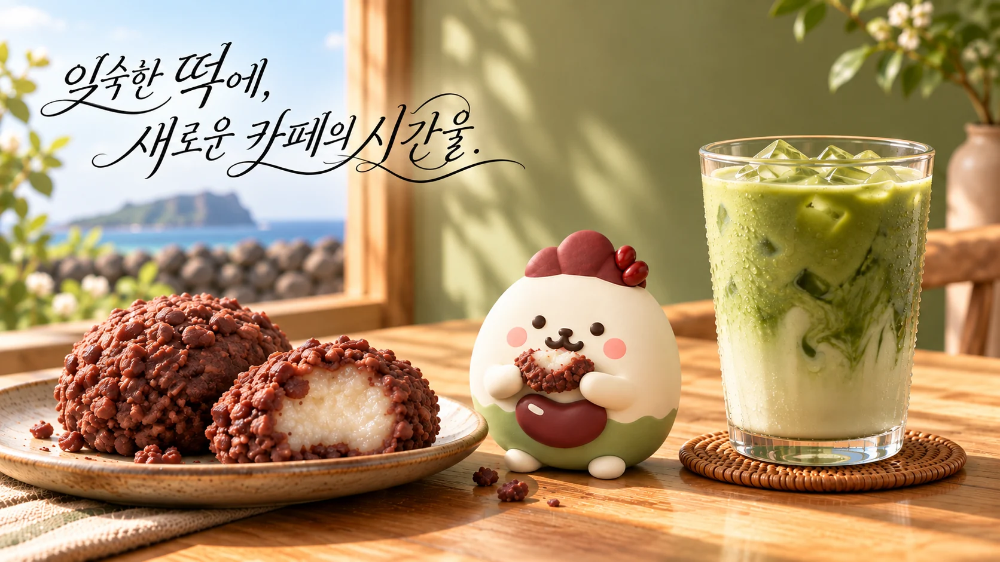
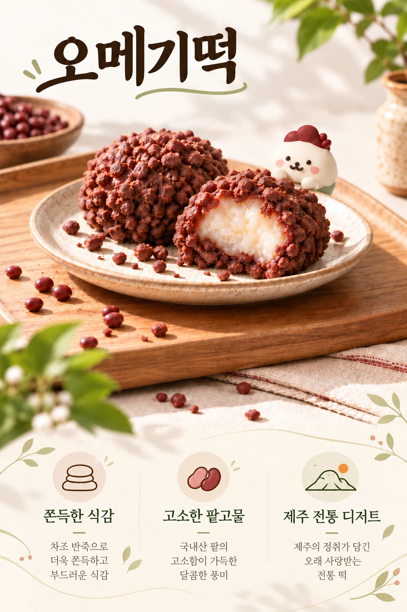
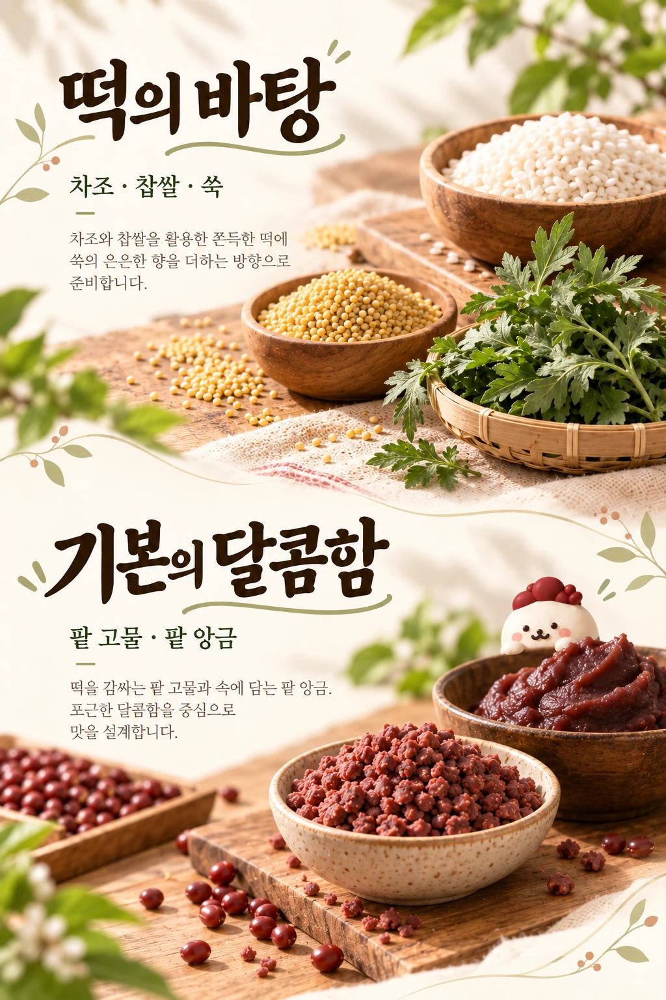
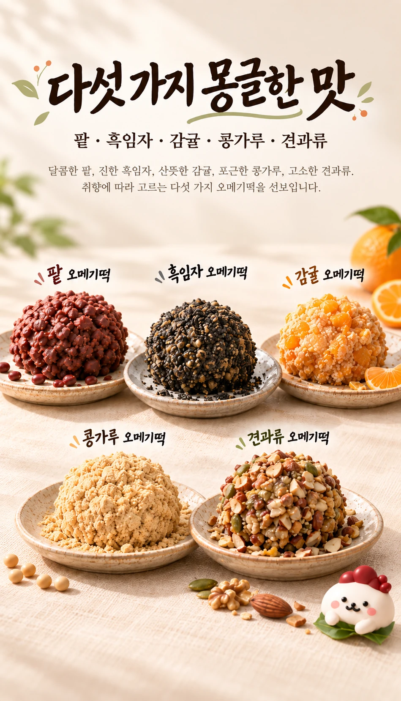
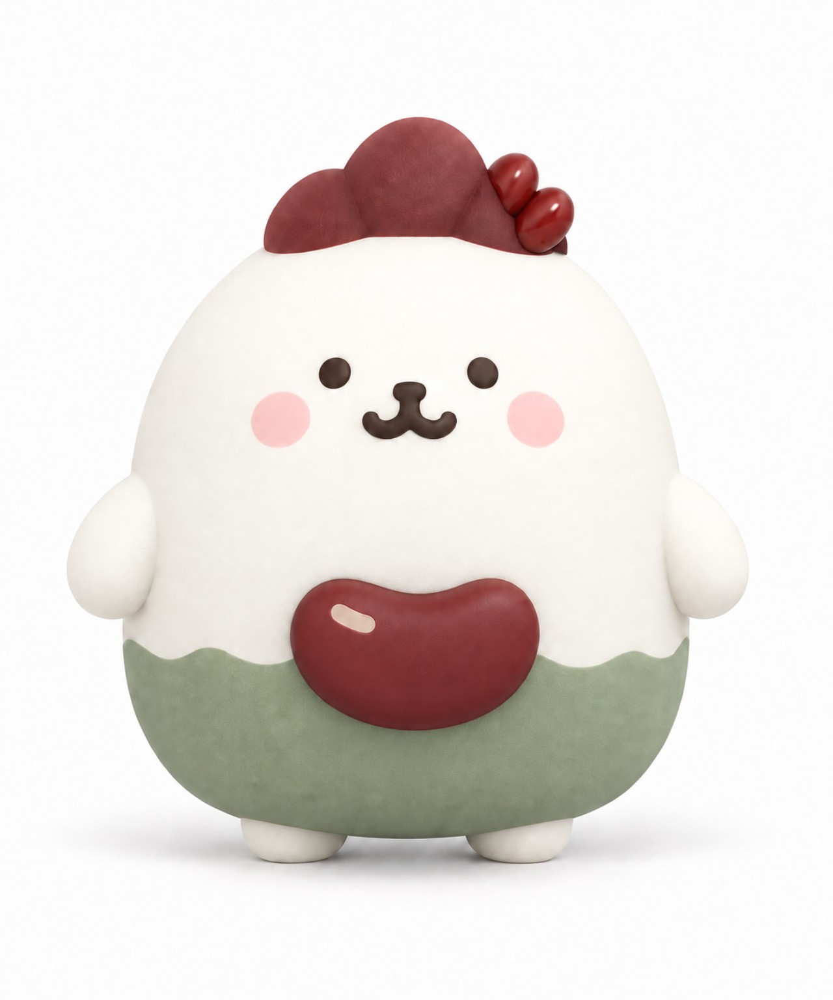

제주를 닮은 한 입
오메기떡을 중심으로 팥, 흑임자, 감귤의 서로 다른 풍미를 소개합니다. 익숙한 떡을 오늘의 디저트로 즐겨보세요.





오메기떡을 닮은 동글동글한 몸,
팥 한 알을 담은 빨간 주머니.
몽글제주의 달콤한 시간을 함께하는 친구예요.
오메기떡을 중심으로 팥, 흑임자, 감귤의 서로 다른 풍미를 소개합니다. 익숙한 떡을 오늘의 디저트로 즐겨보세요.
달콤한 떡 곁에 깔끔한 커피나 부드러운 말차를 더합니다. 좋아하는 맛에 따라 자신만의 조합을 찾아보세요.
몽글제주의 친구 팥몽과 함께 잠깐 쉬어가는 시간. 제주의 맛이 포근한 기억으로 남기를 바랍니다.